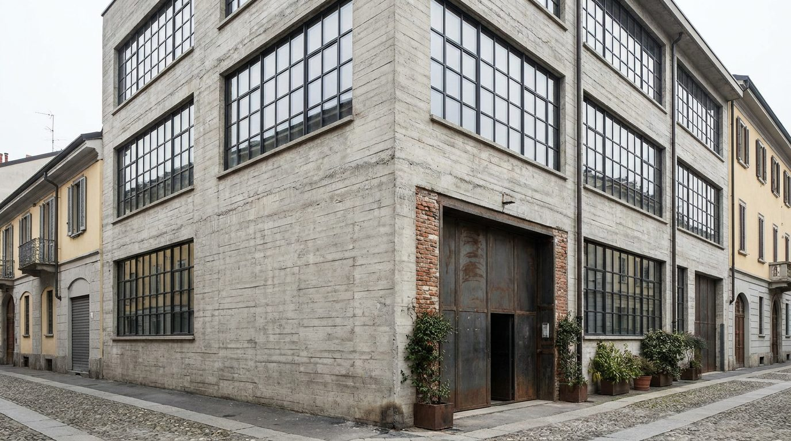
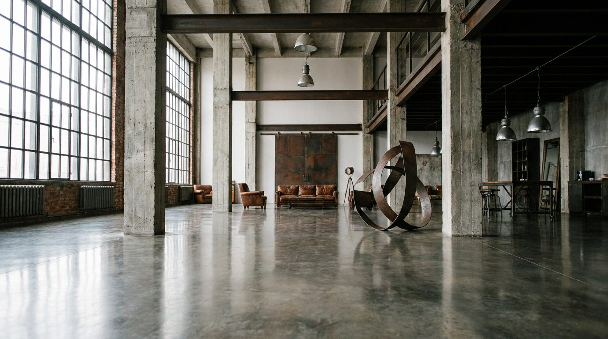

Atlante · IT-11 · Italia · Nord
Loft industriale
Esempi · esterno e interno


Architettura · elementi riproducibili
- struttura in cemento armato o ferro a vista, altezza 5-8 m
- vetrate industriali a tutta altezza con serramenti in ferro
- pavimento in cemento levigato o palladiana
- travi e tubazioni a vista
- grandi luci 3x2 m
- Proporzione: pianta libera, pochi setti, molta aria sopra i mobili.
Luce
vetrate a nord, luce diffusa e uniforme tutto il giorno (la migliore per il prodotto); a sud solo con diffusori.
Prompt di generazione (EN)
Milanese industrial loft, 6 m exposed concrete structure, steel-framed factory windows, polished concrete floor, visible ducts, 3x2 m window grid, even north light, one rust-red and one ochre accent, wide 20 mm, clean neutral grade.
Riferimenti reali
- Superstudio Più, Milano apri ↗